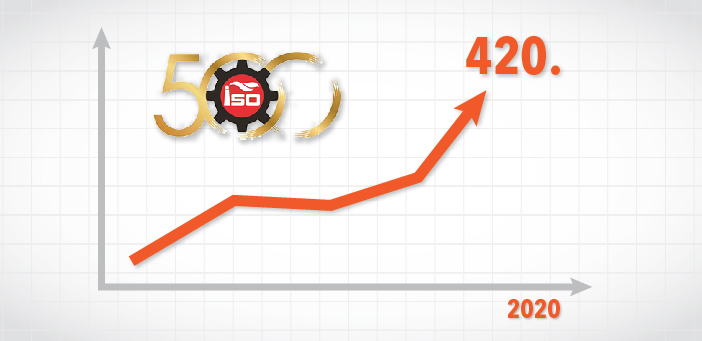

Kalde “kalıcı” başarılarını sürdürüyor.
İstanbul Sanayi Odası (İSO), 2020 yılı Türkiye’nin 500 büyük sanayi kuruluşu sonuçlarını açıkladı.... Geçen yıl 479. sırada bulunan Kalde, bu yıl istikrarlı büyümesinin göstergesi olarak, listede 420. sıradadır. 